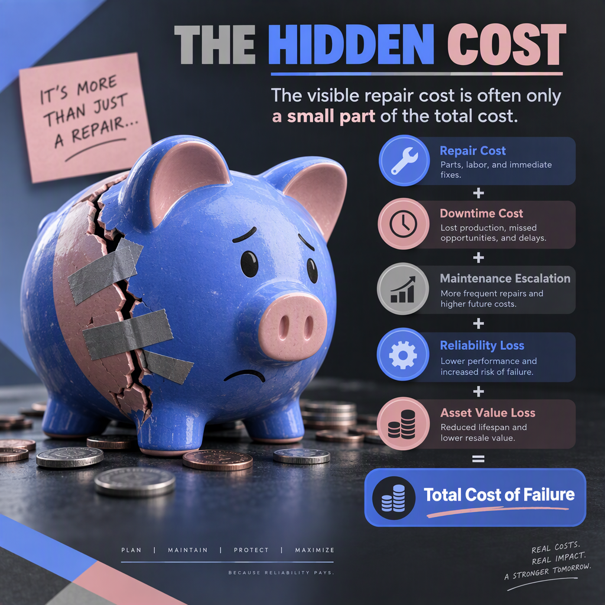
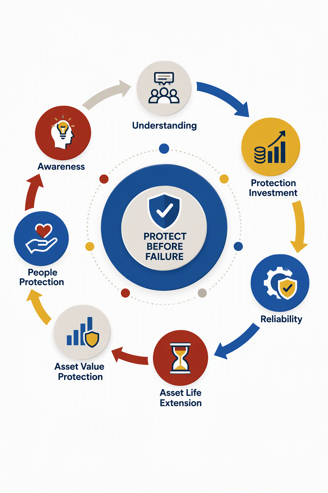
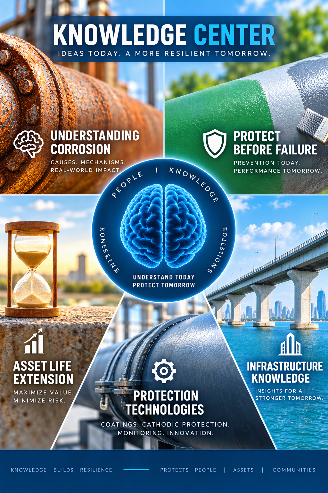

Corrosion is more than rust. It affects asset life, operational reliability, maintenance requirements and long-term asset value.
The visible repair cost is often only a small part of the total cost.

Many organizations measure repair costs. Few measure the true cost of failure.
Pipelines, Pump Stations and Treatment Facilities
Piers, Jetties and Coastal Assets
Utilities, Process Systems and Critical Assets
Long-term investments and structural systems
A practical decision-making framework that helps organizations understand risks before failure occurs, invest in protection, extend asset life and protect long-term asset value.
Every asset has a lifecycle. The decision to understand risks, invest in protection and improve reliability determines how long an asset can create value before failure occurs. Our framework connects understanding, protection investment, asset life extension and asset value protection into a continuous cycle that ultimately supports the people who depend on those assets.

Ideas today. A more resilient tomorrow.

Knowledge builds resilience. Understanding today helps protect tomorrow.
Technology supports protection. We apply proven technologies to extend asset life, improve reliability and protect long-term asset value.